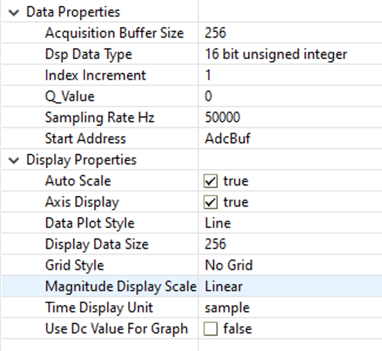

Interprocessor Communication (IPC) Lab#
The objective of this lab exercise is to become familiar with the operation of the IPC module. We will be using the basic IPC features to send data in both directions between CPU1 and CPU2. We will also be using an ePWM module to continuously trigger conversions on an ADC module, which triggers an IPC interrupt at the end of the conversion. At the same time, a DAC will feed data into the ADC, with the help of one of the IPC interrupts. In addition to exploring a basic IPC example, this lab should leave readers more knowledgeable about the capabilities of C2000’s ePWM, DAC, and ADC modules.
Note:
Inter Processor Communication (IPC) module is available only on dual-core systems TMS320F2838xD and TMS320F2837xD
Solution#
All solutions are available
in the directory: [C2000Ware_Install_Path]/training/device/[device_name]/.
Introduction#
Like some other lab exercises, ePWM2 will be configured to provide a 50 kHz SOC signal to ADCA to trigger a conversion. An End-of-Conversion ISR on CPU1 will write each result into a data register in the C1toC2 IPC registers. An IPC interrupt will then be triggered on CPU2 which fetches this data and stores it in a circular buffer. The same ISR on CPU2 grabs a data point from a sine table and loads it into a data register in the C2toC1 IPC registers for transmission to CPU1. This triggers an interrupt on CPU1, which fetches the sine data and writes it into DACB. The DACB output is connected to ADCA by a jumper wire. If the program runs as expected, the sine table and ADC results buffer on CPU2 should contain very similar data.
In summary:
CPU1 will send ADC samples to CPU2 via the IPC registers at a rate of 50kHz which triggers an IPC0 ISR on CPU2.
CPU2 IPC0 ISR will retrieve samples from the IPC registers and store them in circular buffer.
CPU2 IPC0 will then send the next sinusoidal lookup table entry back to CPU1 via the IPC registers which triggers an IPC1 ISR on CPU1.
CPU1 IPC1 ISR will then retrieve the DAC sample from the IPC register and load it onto the DAC.
This process repeats and you should be able to view the sinusoidal waveform via the internal buffer AdcBuf using the plot functionality. Note that
AdcBufhas a size of 256 and is of type uint16_t. The sampling rate is 50kHz.
Note: LED1 and LED2 are being toggled by CPU1 and CPU2 in their respective IPC ISRs. They should be toggling at a rate of 1Hz and should have alternating states, i.e., if LED1 is high, then LED2 should be low, etc.
Lab Setup#
Hardware Setup#
You will need the following hardware for this lab:
A C2000 controlCARD or LaunchPad with the supplied USB cable.
Jumper cables.
Oscilloscope (optional).
Use the supplied USB cable to connect your C2000 board’s USB port to the standard USB Type-A connector in your computer. You should see some LEDs light up on your board. In addition to powering the board, a JTAG communication link is also established between the device and Code Composer Studio. Refer to Getting Started module for more details if needed.
Connect the jumper cable from the ADCINA0 pin to the DACB pin so the ADC can sample the output of the DAC.
LaunchPad
Device |
ADCINA0 Pin |
DACB Pin |
|---|---|---|
F28379D |
30 |
70 |
F2838x |
n/a |
n/a |
ControlCARD
Device |
ADCINA0 Pin |
DACB Pin |
|---|---|---|
F28379D |
9 |
11 |
F2838x |
9 |
11 |
Software Setup#
The following software will need to be installed on your computer:
Import Empty Project#
Our first task is to import an empty project to our Code Composer Studio (CCS) workspace. The basic instructions are as follows:
Open CCS and go to Project→Import CCS Projects. A new window should appear. Ensure that the Select search-directory option is activated.
Click the Browse button and select the
[C20000ware_Install_dir]/training/device/[device]/empty_ipc_labdirectory.
Note that the default Windows [C20000ware_Install_dir] isC:/ti/c2000/C2000Ware_4_xx_xx_xx.Under Discovered Projects, you should now see the
multicore_[board]_[device]_multiproject. Select the appropriate project for either the control card or the launchpad.
Click Finish to import and copy the
multicore_[board]_[device]_multiproject into your workspace.After the project has been imported, the project explorer window should have three new projects and look like below:
core1.c: C28x core C-source file with empty main() function, which will be compiled for CPU1
core2.c: C28x core C-source file with empty main() function, which will be compiled for CPU2
core1.syscfg: SysConfig file with settings for CPU1, opening this file will open Multicore SysConfig
core2.syscfg: SysConfig file with settings for CPU2, opening this file will open Multicore SysConfig
Now you may want to rename your projects, though it is not essential. Rename the project by right-clicking on each of the projects and selecting ‘Rename’. In the image below, we have renamed the projects to
ipc_lab_[core].To finish renaming the projects, we have to make a small change to the system.xml file. Double-click the
ipc_lab_multiproject, then right-click on the system.xml file, and select ‘Open With > Generic Text Editor’. Change the text circled below to match the new names of yourcore1andcore2projects.
Part 1 : CPU1 (C28x)#
Configure the GPIO#
We will configure the necessary GPIO pins as shown below. Specifically, we will configure two of the board LEDs as an indicators.
Steps to add GPIO configuration:#
In your project, open the
core1.syscfgor thecore2.syscfgfile by double-clicking it.Both
.syscfgfiles should open the Multicore SysConfig viewSelect the option at the top of the SysConfig window to switch to the CPU1 view, which is circled in the image below
Click ‘+’ next to GPIO to add a GPIO SysConfig module, like shown below
Select GPIO numbers for your device and board from the table below.
LaunchPad
Device |
LED4 Pin |
LED5 Pin |
|---|---|---|
F28379D |
31 |
34 |
F2838x |
n/a |
n/a |
ControlCARD
Device |
LED4 Pin |
LED5 Pin |
|---|---|---|
F28379D |
31 |
34 |
F2838x |
31 |
34 |
The parameters should be filled like below.
Next click ‘+ Add’ to add another GPIO instance, and fill the parameters like below.
Configure ePWM2#
In this lab, the ADC will be used to sample the output from the DAC at a rate of 50kHz. The below SysConfig settings enable ePWM2 to trigger a SOC on the ADC at a rate of 50kHz. Notice that ePWM2 is setup to operate in up count mode, hence, we have
\(\text{Time Base Period}=\frac{f_{tbclk}}{f_{pwm}}-1=\frac{100* 10^6}{50000}-1=1999.\)
To implement these specifications with SysConfig, first click the ‘+’ by EPWM in the CPU1 SysConfig screen to open an instance of the EPWM module.
Expand the ‘EPWM Time Base’ dropdown menu, and apply the changes circled below.
Expand the ‘EPWM Event-Trigger’ dropdown menu, and apply the changes circled below.
Expand the ‘PinMux Peripheral and Pin Configuration’ dropdown menu, and apply the changes circled below.
This concludes the configuration of the ePWM module.
A more detailed explanation of the ePWM configuration
The configuration of ePWM2 above is identical to that of the lab in ePWM Lab, so you should see that lab for a more detailed explanation.
Configure the ADC#
In the previous section, we explained that ePWM2 would be triggering a SOC event on the ADC. In this section, we will provide the code to configure the ADC. More details about the configuration of the ADC can be found in Analog-to-Digital Converter (ADC). However, notice that we have setup a SOC to be triggered by ePWM2 and that we have setup the ADC to interrupt at the end of a conversion. This interrupt will be utilized by CPU1 so it knows when to load new samples from the ADC into the IPC data registers for CPU2. The ADC is also setup in continuous mode so that the ADC register always contains the most recent sample.
Add ADC by clicking the ‘+’ by ADC in the CPU1 SysConfig screen. Make sure to make the changes circled below. Notice that the F2837xd and F2838x devices have 200MHz SYSCLK frequencies.

* Expand the 'ADC INT Configurations' dropdown menu, make the changes circled below.
Configure the DAC#
Now we will configure DACB so that it can output sine data for ADCA to sample. New data to convert will be loaded for DACB by the IPC interrupt ipc1_ISR.
Add DAC module by clicking the ‘+’ by DAC in the CPU1 SysConfig screen. Make sure to make the changes circled below.
These settings should cause a warning message, which we will resolve later with our CPU2 IPC SysConfig settings
Configure the CMD Tool module#
Now we will configure the CMD Tool module on CPU1 so that the device memory locations are provided to CCS.
If you are using a project from the empty_ipc_lab directory, your project will not have any linker .cmd files.
Otherwise, you will need to delete the existing linker .cmd files like shown below.
Now we will use the SysConfig CMD Tool to generate the linker .cmd files.
Add CMD Tool module by clicking the ‘+’ by CMD in the CPU1 SysConfig screen (you will likely need to scroll down to see CMD). Make the change circled below for your project to use the generated linker
.cmdfiles.
Select the type of memory you want to use for loading your program onto the device. The options are circled below. You should briefly see a message saying “Running external process” after clicking an option.
Configure the IPC module#
Now we will configure the IPC module on CPU1 so that CPU2 can trigger the IPC interrupt ipc1_ISR on CPU1.
We will also define a new name for IPC_FLAG31 to clarify the function of the flag.
For now, SysConfig will show an error, since the IPC module is needed on both CPUs. We will fix this error in a later section.
Add IPC module by clicking the ‘+’ by IPC in the CPU1 SysConfig screen. Make sure to make the changes circled below.
Define global macros and variables#
First, we will define some necessary macros and global variables. Click on the
.c file in your project. In order to use driverlib and SysConfig, make sure
that you have included driverlib.h, device.h, board.h and ipc.h. The
files driverlib.h and device.h should be included by default.
#include "ipc.h"
#include "board.h"
uint16_t LedCtr1 = 0; // Counter to slow down LED toggling in ipc1_ISR.
// declaration of ISR functions
interrupt void adcA1ISR(void);
interrupt void ipc1_ISR(void);
Define main()#
Next, we will populate main() as shown below.
That being said, we will still need to know the system clock frequency in order
to configure our PWM waveform frequency. The system clock frequency value is
defined via the macro DEVICE_SYSCLK_FREQ in [projectroot]/device/device.h. Observe that
the main function only handles initialization routines. Most of the activity in
this lab lies in the peripherals themselves and their interrupt service
routines.
void main(void)
{
// Configure system clock and PLL, enable peripherals, and configure
// flash if used.
Device_init();
// Initialize the PIE module and vector table.
Interrupt_initModule();
Interrupt_initVectorTable();
// Initialize settings from SysConfig
Board_init();
// Short delay to let the DAC and other peripherals start up.
DEVICE_DELAY_US(1000);
// Clear any IPC flags if set already
IPC_clearFlagLtoR(IPC_CPU1_L_CPU2_R, IPC_FLAG_ALL);
// Synchronize both the cores.
IPC_sync(IPC_CPU1_L_CPU2_R, IPC_FLAG17);
// Enable global interrupts.
EINT;
ERTM;
for (;;) {
// Do nothing.
NOP;
}
}
Define the ADC interrupt service routine#
In this section, we will define the ADC interrupt service routine. This interrupt service routine will read the result and write it into the data register of the IPC module. It uses IPC DriverLib API to write the result to the data register. Then an IPC interrupt will be triggered on CPU2.
interrupt void adcA1ISR(void)
{
uint32_t adcResult;
// Clear interrupt flags.
Interrupt_clearACKGroup(INTERRUPT_ACK_GROUP1);
ADC_clearInterruptStatus(ADCA_BASE, ADC_INT_NUMBER1);
// Read the sample from the ADC.
adcResult = (uint32_t)ADC_readResult(ADCARESULT_BASE, ADC_SOC_NUMBER0);
// Send it over to CPU2.
IPC_sendCommand(IPC_CPU1_L_CPU2_R, IPC_FLAG0, false, 0, 0,
adcResult);
}
Define the IPC interrupt service routine#
The interrupt service routine of the IPC reads the data from the IPC data register using the IPC driverlib API. The read data is then loaded into the shadow register of the DAC-B.
interrupt void ipc1_ISR(void)
{
uint32_t cmd, addr, data;
// Clear the interrupt flags.
Interrupt_clearACKGroup(INTERRUPT_ACK_GROUP1);
// Get the next DAC sample from CPU2.
IPC_readCommand(IPC_CPU1_L_CPU2_R, IPC_FLAG1, false, &cmd, &addr, &data);
// Acknowledge IPC1 flag from remote.
IPC_ackFlagRtoL(IPC_CPU1_L_CPU2_R, IPC_FLAG1);
// Load the new sample on the DAC.
DAC_setShadowValue(DACB_BASE, (uint16_t)data);
// Toggle LED1 at a rate of 1Hz.
if (LedCtr1++ >= 50000) {
GPIO_togglePin(DEVICE_GPIO_PIN_LED1);
LedCtr1 = 0;
}
}
Part 2 : CPU2 (C28x)#
Steps to Configure the CMD Tool module#
Now we will configure the CMD Tool module on CPU1 so that the device memory locations are provided to CCS.
If you are using a project from the empty_ipc_lab directory, your project will not have any linker .cmd files.
Otherwise, you will need to delete the existing linker .cmd files like shown below.
Now we will use the SysConfig CMD Tool to generate the linker .cmd files for CPU2.
Add CMD Tool module by clicking the ‘+’ by CMD in the CPU1 SysConfig screen (you will likely need to scroll down to see CMD). Make the change circled below for your project to use the generated linker
.cmdfiles.
Select the type of memory you want to use for loading your program onto the device. The options are circled below. You should briefly see a message saying “Running external process” after clicking an option.
Steps to configure IPC module:#
Now we will configure the IPC module on CPU2 so that CPU1 can trigger the IPC interrupt ipc0_ISR on CPU2. We will also define a new name for IPC_FLAG31 to clarify the function of the flag.
In your project, open the
core1.syscfgor thecore2.syscfgfile by double-clicking it.Both
.syscfgfiles should open the Multicore SysConfig viewSelect the CPU2 option at the top of the SysConfig window to switch to CPU2 view
Click ‘+’ next to IPC to add a IPC SysConfig module
Make sure to make the changes circled below.
Define macros and variables#
First, we will define some necessary macros and global variables. In order to
use driverlib, make sure that you have included driverlib.h, device.h, board.h and ipc.h.
There are two main global variables:
SinTable - The SinTable consists of fix-point 16-bit samples.
AdcBuf - It is circular buffer which is filled by IPC data received from CPU1. AdcBuf is used to plot the graph.
#include "ipc.h"
#include "board.h"
#define DAC_OUTPUT_BITS 11 // Bits of output for the DAC.
#define BUF_BITS 8 // Buffer bits.
#define BUF_LEN (1 << BUF_BITS) // Buffer length.
#define BUF_MASK ((uint16_t)(BUF_LEN - 1)) // Buffer index mask.
#define LUT_BITS 6 // Sin table bits.
#define LUT_LEN (1 << LUT_BITS) // Sin table length.
#define LUT_MASK ((uint16_t)(LUT_LEN - 1)) // Sin table index mask.
uint16_t AdcBuf[BUF_LEN]; // ADC buffer to store samples.
uint16_t AdcBufIdx = 0; // ADC buffer index.
uint16_t SinPhase = 0; // Sin table index, i.e., phase.
uint16_t LedCtr2 = 0; // Counter to slow down the toggling of the LED.
// Fixed Point Sin Table
// 16-bits of amplitude resolution
// 6-bits of phase resolution
// phi = (0:2^LUT_BITS-1)*2pi
// SinTable = (sin(phi) + 1)*(2^16 - 1)/2
uint16_t SinTable[LUT_LEN] = {
0x8000,0x8c8b,0x98f8,0xa527,0xb0fb,0xbc56,0xc71c,0xd133,
0xda82,0xe2f1,0xea6d,0xf0e2,0xf641,0xfa7c,0xfd89,0xff61,
0xffff,0xff61,0xfd89,0xfa7c,0xf641,0xf0e2,0xea6d,0xe2f1,
0xda82,0xd133,0xc71c,0xbc56,0xb0fb,0xa527,0x98f8,0x8c8b,
0x8000,0x7374,0x6707,0x5ad8,0x4f04,0x43a9,0x38e3,0x2ecc,
0x257d,0x1d0e,0x1592,0x0f1d,0x09be,0x0583,0x0276,0x009e,
0x0000,0x009e,0x0276,0x0583,0x09be,0x0f1d,0x1592,0x1d0e,
0x257d,0x2ecc,0x38e3,0x43a9,0x4f04,0x5ad8,0x6707,0x7374,
};
Define the IPC interrupt service routine#
The interrupt service routine of the IPC reads the data from the IPC data register using the IPC driverlib API. The read data is then stored in the AdcBuf circular buffer . Then it reads the next data from the SinTable and writes it to the IPC data register for CPU1. Again, we will use the driverlib API to write to the IPC register.
interrupt void ipc0_ISR(void)
{
uint32_t cmd, addr, data;
// Clear interrupt flags.
Interrupt_clearACKGroup(INTERRUPT_ACK_GROUP1);
// Read the data from the IPC registers.
IPC_readCommand(IPC_CPU2_L_CPU1_R, IPC_FLAG0, false, &cmd, &addr, &data);
// Acknowledge IPC1 flag from remote.
IPC_ackFlagRtoL(IPC_CPU2_L_CPU1_R, IPC_FLAG0);
// Get the ADC sample from CPU1 and store it in a circular buffer.
AdcBuf[AdcBufIdx++ & BUF_MASK] = (uint16_t)data;
// Send next DAC sample from the sinusoidal table to CPU1.
IPC_sendCommand(IPC_CPU2_L_CPU1_R, IPC_FLAG1, false, 0, 0,
(uint32_t)(SinTable[SinPhase++ & LUT_MASK] >> (16 - DAC_OUTPUT_BITS)));
// Toggle LED2 at a rate of 1Hz.
if (LedCtr2++ >= 50000) {
GPIO_togglePin(DEVICE_GPIO_PIN_LED2);
LedCtr2 = 0;
}
}
Define main() function#
Next, we will populate main() as shown below.
Besides system initialization, we will register IPC interrupt service routine for IPC flag0.
void main(void)
{
// Configure system clock and PLL, enable peripherals, and configure
// flash if used.
Device_init();
// Initialize the PIE module and vector table.
Interrupt_initModule();
Interrupt_initVectorTable();
// Initialize settings from SysConfig
Board_init();
// Clear any IPC flags if set already
IPC_clearFlagLtoR(IPC_CPU2_L_CPU1_R, IPC_FLAG_ALL);
// Enable IPC0 interrupt.
IPC_registerInterrupt(IPC_CPU2_L_CPU1_R, IPC_INT0, ipc0_ISR);
// Make sure that LED2 is set high to complement LED1.
GPIO_writePin(DEVICE_GPIO_PIN_LED2, 0);
// Enable global interrupts.
EINT;
// Enable real-time debug.
ERTM;
// Synchronize both the cores.
IPC_sync(IPC_CPU2_L_CPU1_R, IPC_FLAG17);
for (;;) {
// Do nothing.
NOP;
}
}
Now save the files and you are ready to build the project.
Jumper Pin Connection#
Connect the jumper cable from the ADCINA0 pin to the DACB pin so the ADC can sample the output of the DAC.
LaunchPad
Device |
ADCINA0 Pin |
DACB Pin |
|---|---|---|
F28379D |
30 |
70 |
F2838x |
n/a |
n/a |
ControlCARD
Device |
ADCINA0 Pin |
DACB Pin |
|---|---|---|
F28379D |
9 |
11 |
F2838x |
9 |
11 |
Build and Load the Project#
In the Project Explorer window click on the
[your_project_name]_multiproject to set it active. Then click the “Build” button and watch the tools run in the “Console” window. This will build all of the associated projects. Check for any errors in the “Problems” window.Again, in the Project Explorer window click on the
[your_project_name]_core1project to set it active. Click on the “Debug” button (green bug). A Launching Debug Session window will open. Select only CPU1 to load the program on, and then click OK. The “CCS Debug” perspective view should open, then CPU1 will connect to the target and the program will load automatically.Next, we need to connect to and load the program on CPU2. Right-click at the line
Texas Instruments XDS100v2 USB Debug Probe_0/C28xx_CPU2and selectConnect Target.With the line
Texas Instruments XDS100v2 USB Debug Probe_0/C28xx_CPU2still highlighted, load the program: ‘Run > Load > Load Program…’ Browse to the file:[project]/CPU2_RAM/[your_project_name]_core2.outand select OK to load the program.Again, with the line
Texas Instruments XDS100v2 USB Debug Probe_0/C28xx_CPU2still highlighted, set the bootloader mode using the menu bar by clicking: ‘Scripts > EMU Boot Mode Select > EMU_BOOT_SARAM’. CPU1 bootloader mode was already set in the previous lab exercise. If the device has been power cycled since the last lab exercise, be sure to configure the boot mode to EMU_BOOT_SARAM using the Scripts menu for both CPU1 and CPU2.
Run the Code#
In the Debug window, click on the line
Texas Instruments XDS100v2 USB Debug Probe_0/C28xx_CPU1. Run the code on CPU1 by clicking the green “Resume” button. At this point CPU1 is waiting for CPU2 to be ready. In the Debug window, click on the lineTexas Instruments XDS100v2 USB Debug Probe_0/C28xx_CPU2. As before, run the code on CPU2 by clicking the “Resume” button. Using the IPC, CPU2 communicates to CPU1 that it is now ready. LED D10 connected to CPU1 on the LaunchPad should be blinking at a period of approximately 1 second. Note that LED D9 connected to CPU2 will not be used in this lab exercise.In the Debug window select CPU1. Halt the CPU1 code after a few seconds by clicking on the “Suspend” button.
Then in the Debug window select CPU2. Halt the CPU2 code by using the same procedure.
View the Circular Buffer (AdcBuf)#
Open and set up a graph to plot a 256-point window of the ADC results buffer. Click: Tools→Graph→Single Time and set the following values:
Important
Note: If you do not see CCS menu Tools → Graph, please refer to Getting Started (Setting CCS for graph) to see the instruction on how to enable CCS graphing tool in your perspective.

Select OK to save the graph options.
If the IPC communications are working, the ADC buffer on CPU2 should contain the sine data transmitted from the look-up table. The graph view should look like:
We will now run the code in real-time emulation mode. On the graph window toolbar, left-click on
Enable Continuous Refresh(the yellow icon with the arrows rotating in a circle over a pause sign). This will allow the graph to continuously refresh in real-time while the program is running.
IPC communication between C28x and CM Core#
Note:
TMS320F2838xD also has Connectivity Manager (CM)
subsystem. The CM subsystem is based on the industry-standard 32-bit Arm® Cortex®-M4 CPU
and features a wide variety of communication peripherals, including EtherCAT, Ethernet,
USB, MCAN (CAN-FD), DCAN, UART, SSI, I2C, and so on. The IPC communication between C28x and CM core
functions in a similar way as IPC communication between CPU1 and CPU2 as illustrated above.
All IPC features are independent of each other, and have dedicated IPC MSGRAM and IPC flags.
Please refer to the C2000Ware DriverLib example if you need working example for IPC communication
between C28x and CM core. The example can be found at the following location:
C:/ti/c2000/C2000Ware_X_XX_XX_XX/driverlib/f2838x/examples/c28x_cm/ipc
Full Solution#
The full solution to this lab exercise is included as part of the C2000Ware
SDK. Import the project from
[C2000Ware_Install_Path]/training/device/[device_name]/advance_topics/lab_ipc.
Feedback
Please provide any feedback you may have about the content within C2000 Academy to: c2000_academy_feedback@list.ti.com